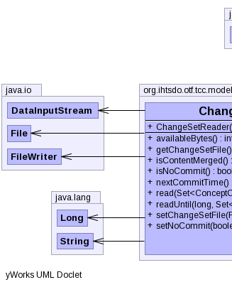

public class ChangeSetReader extends Object implements ChangeSetReaderI
|  |
| Constructor and Description |
|---|
ChangeSetReader() |
| Modifier and Type | Method and Description |
|---|---|
int |
availableBytes() |
File |
getChangeSetFile() |
boolean |
isContentMerged() |
boolean |
isNoCommit() |
long |
nextCommitTime() |
void |
read(Set<ConceptChronicleBI> indexedAnnotationConcepts)
Read this file until the end.
|
void |
readUntil(long endTime,
Set<ConceptChronicleBI> indexedAnnotationConcepts)
Read this change set until the specified commit time.
|
void |
setChangeSetFile(File changeSetFile) |
void |
setNoCommit(boolean noCommit) |
public boolean isNoCommit()
public void setNoCommit(boolean noCommit)
public long nextCommitTime()
throws IOException,
ClassNotFoundException
nextCommitTime in interface ChangeSetReaderIIOExceptionClassNotFoundExceptionpublic void readUntil(long endTime,
Set<ConceptChronicleBI> indexedAnnotationConcepts)
throws IOException,
ClassNotFoundException
ChangeSetReaderIreadUntil in interface ChangeSetReaderIendTime - the commit time to read until.IOExceptionClassNotFoundExceptionpublic void read(Set<ConceptChronicleBI> indexedAnnotationConcepts) throws IOException, ClassNotFoundException
ChangeSetReaderIread in interface ChangeSetReaderIIOExceptionClassNotFoundExceptionpublic File getChangeSetFile()
getChangeSetFile in interface ChangeSetReaderIpublic void setChangeSetFile(File changeSetFile)
setChangeSetFile in interface ChangeSetReaderIchangeSetFile - the change set file to validate and read.public int availableBytes()
throws FileNotFoundException,
IOException,
ClassNotFoundException
availableBytes in interface ChangeSetReaderIFileNotFoundExceptionIOExceptionClassNotFoundExceptionpublic boolean isContentMerged()
isContentMerged in interface ChangeSetReaderICopyright © 2013 International Health Terminology Standards Development Organisation. All rights reserved.